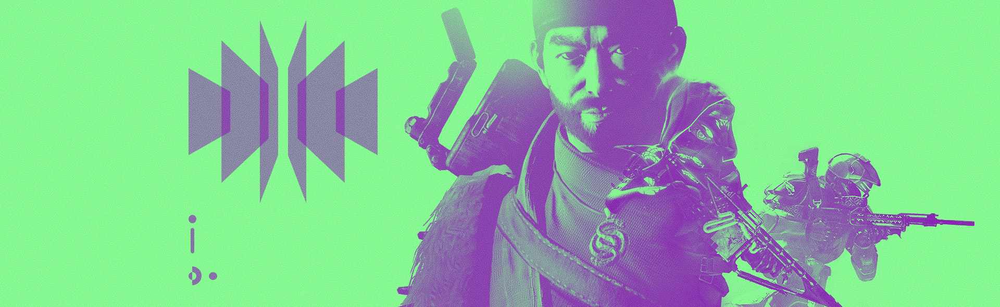

"What's this about?" Joxer asked.
The Titan sat across from the rogue Lightbearer known only as the Drifter. Between them, unloaded rifles, hand cannons, and Last City food wrappers lay strewn across the Derelict's rusty deck. Joxer could feel the ship's engines humming under his boots, reverberating throughout the chamber.
"Think of this as a job interview," Drifter replied. "I got a whole new operation about to come online, and Gambit was training for it. You're one of the best candidates I got."
Beneath his helmet, Joxer raised an eyebrow. "You sure about that? I'm no ‘Hero of the Red War.'"
Drifter chuckled. "Why does everyone think I got a mad-on for that one?"
Joxer shook his head. "I heard you two forged a gun together."
Drifter frowned. "Hand to my heart, it wasn't just us. Whole buncha folks running around with Malfeasance hand cannons these days. My grandma, too."
"That Primeval really knows how to run," Joxer snarled at the deck.
"Listen, big guy." Drifter leaned back. "Not my fault you keep missing the shot."
Joxer stood up out of his seat and towered over the other man.
"Hey! My bad, brother!" Drifter held up a hand. "Your Motes are always good here, whether you're packing Malfeasance or not. What I need done, only a specialist—like you—can do."
Joxer stared down at him. "What do you mean?"
D: "I seen you out there. You get how the Taken feel. How the Darkness… flows. You revel in it."
Joxer sat back down, slowly.
"You're a born invader, my friend. The best." Drifter smiled again, with lightless eyes. "And I'll need someone like you to test out my new project before I unveil it to the unwashed masses: Gambit Prime."
J: "Sounds like a promotion at my local Sparrow dealership."
D: "You wanna get paid or not?"
J: "What do I kill?"